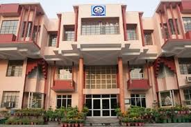

Education
I completed my 10th and 12th grades at Maharaja Agarsain Public School, Ashok Vihar. In 11th and 12th grades, I pursued the commerce stream with mathematics as my main subject. Currently, I am in the 1st semester of the BCA program at VIPS/VSIT.
